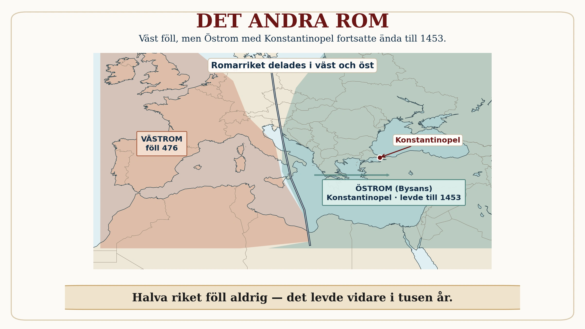

Vi säger ofta att "Rom föll år 476". Men den meningen är bara halva sanningen — bokstavligen halva. När riket delades i en västlig och en östlig del föll bara den ena. Den andra levde vidare i nästan tusen år till. Att missa det är att missa en av historiens största missuppfattningar, och att förstå det förändrar hela bilden av vad "Roms fall" egentligen betyder.

Öst föll inte. Standardtexten nämner det i förbigående: den östra delen var rikare, hade starkare städer och bättre försvar, och överlevde länge som det vi kallar det bysantinska riket. Men "länge" gör inte poängen rättvisa. Medan västriket vittrade sönder under 400-talet, blomstrade öst. Dess huvudstad, Konstantinopel, var enormt rik, skyddad av väldiga murar, och tänkt just som ett nytt Rom i öster. Där den västra halvan föll, stod den östra kvar i över tusen år till — ända till år 1453.
De kallade sig själva romare. Här kommer det som brukar överraska mest. Människorna i det östra riket kallade sig aldrig "bysantiner" — det ordet hittade historiker på långt senare. De kallade sig romaioi, alltså romare. För dem hade Romarriket aldrig fallit; det hade bara förlorat sina västliga provinser. Kejsaren i Konstantinopel var den romerske kejsaren, i obruten följd. Att de talade grekiska i stället för latin och var kristna gjorde dem inte mindre romerska i egna ögon. "Rom" i den meningen varade från stadens sägenomspunna grundande på 700-talet f.Kr. ända till 1453 e.Kr. — över tvåtusen år.
Och de räddade antiken åt oss. Det östra riket gjorde dessutom något ovärderligt. Under alla dessa århundraden bevarade och kopierade dess lärda de gamla grekiska och romerska texterna — filosofi, vetenskap, litteratur — om och om igen för hand, generation efter generation. En stor del av allt vi i dag känner till om antikens Grekland och Rom finns kvar just därför att öst höll det vid liv medan väst glömde. Här sluts en tråd från djupdykningen om Alexandrias bibliotek: drömmen om att samla och bevara kunskap dog inte med biblioteket — den levde vidare i öster.
Så — föll Rom? Nu ser du varför frågan från fördjupningen inte har ett enkelt svar. Det beror helt på var du står. I Italien och västra Europa, ja — där bröts den romerska staten sönder och förvandlades, långsamt, till något nytt. Men i Konstantinopel? Där skulle en förvånad romare ha frågat vad du menar. Riket fanns ju kvar, kejsaren satt på sin tron, lagarna gällde. Rom "föll" och "fanns kvar" samtidigt — beroende på vilken halva av kartan du pekade på.
Och medan öst bevarade den gamla världen, blev västs ruiner grogrunden för något nytt. Ur folkvandringarnas rörelse, ur blandningen av romerskt och germanskt, ur kyrkans arbete att rädda språk och texter, växte medeltidens Europa fram. Det är den värld vi redan mött — och dit den här långa historien, från de första floderna till det sista Rom, nu lämnar över stafettpinnen.